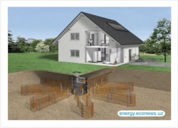

Что такое геотермальная энергетика


В данном случае источник энергии лежит у нас под ногами. Речь идет об геотермальных тепловых насосах. Вы слышали о проекте латвийского миллионера под названием “Город солнца”? На территории 3000 гектаров он построил 300 домов из экологически чистых материалов. Возле каждого дома есть лес и озеро. Поселок спроектирован так, что из окон вы не увидите соседей. Но мое внимание привлек тот факт, что отопление домов осуществляется используя нетрадиционные источники энергии — с помощью геотермальных тепловых насосов.
Кстати, вот несколько фактов про них: Например Швеция, вот уж холодная страна на севере континента, а геотермальные тепловые насосы отапливают 50 % домов и зданий в стране (кстати в столице Швеции Стокгольме 12% помещений отапливается геотермальными тепловыми насосами качающими тепло из Балтийского моря);
По законам, в Соединенных Штатах Америки, необходимо при строительстве новых общественных зданий оснащать их геотермальным тепловыми насосами в обязательном порядке. Ежегодно США производит более миллиона тепловых насосов;
Немецкое правительство дотирует людей и организации устанавливающих тепловые насосы, что повышает доступность этого оборудования;
Такая маленькая страна как Швейцария использует 60.000 геотермальных тепловых насосов.
Посмотрим, что представляет собой грунтовой тепловой насос. Принцип действия вы можете увидеть на сайте http://www.avante.com.ua/ , но для людей ценящих свое время я кратко распишу принцип действия.
Температура земли ниже уровня промерзания всегда равна 8 градусам тепла, по шкале Цельсия и с увеличением глубины температура растет. так на глубине 60 метров она будет равна 12-15 градусов тепла. При установке грунтового теплового насоса либо бурится скважина 90-120 метров, либо (если есть какие-то препятствия к использованию скважины) роются траншеи на глубину не менее 1 метра и туда укладывается труба с теплоносителем, водным раствором гликоля. Если у вас под боком расположено озеро, которое в вашем личном пользовании, то вы можете использовать его тепло и в этом случае трубы теплообменника располагаются по дну водоема.
Тепловой насос отбирает низкотемпературное тепло у земли или воды и преобразует его в высокотемпературное тепло, которым и отапливается здание. Для уверенности, что система отопления справится со своей задачей, она комплектуется резервным электрокотлом, который помогает тепловому насосу в случае больших холодов. Такая система потребляет 1 кВт электроэнергии, а производит 4-5 кВт тепла и не зависит от цен на газ, уголь, мазут. Систему с геотермальным тепловым насосом можно использовать летом как кондиционер и она будет отбирать тепло из помещения и отдавать его в землю или водоем. Какой же срок жизни такой системы? Для траншейной схемы укладки – 50 лет, если вы используете скважину, то до 100 лет. Вот только компрессор придется заменить раньше, у него срок службы — 15 лет. Но альтернативная энергетика может дать вам полную тепло- и энергонезависимость, если вы решите использовать и другие возобновляемые источники энергии. Например ветрогенератор или солнечные батареи. Если рассчитать финансовые затраты установки геотермального теплового насоса для дома площадью 140 квадратных метров, получится сумма порядка 15-20 тысяч евро. При текущих ценах на электроэнергию (которую мы используем для отопления) использование альтернативного источника энергии окупится через 30 лет. Но учитывая ситуацию с ценами на энергоносители и общемировой кризис, а также срок службы оборудования — это вложение денег, которое привнесет стабильность и независимость в отопительную систему вашего жилища. В русскоязычной части сети Интернет достаточно много материалов о грунтовых тепловых насосах, к сожалению, она однобока, поскольку большая её часть – перепечатки одного и того же, либо она слегка устарела. Более актуальную информацию можно найти в англоязычном секторе Интернет, например поискав в вашей любимой поисковой системе фразу «ground source heat pump». Либо на сайтах производителей NIBE или Viessmann (раздел heat pumps)